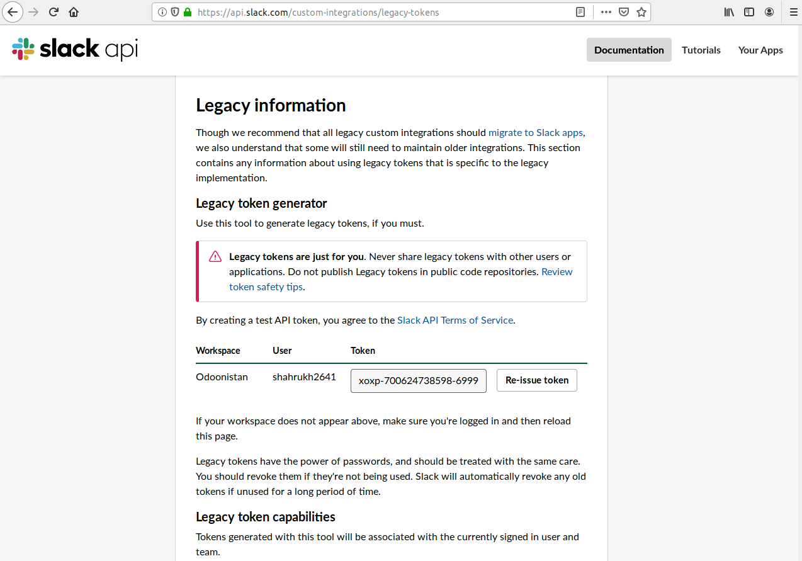
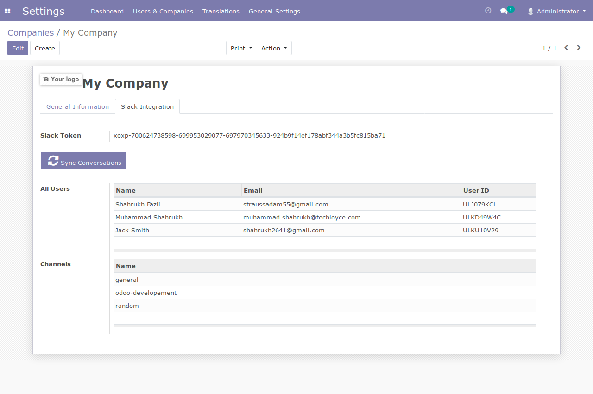
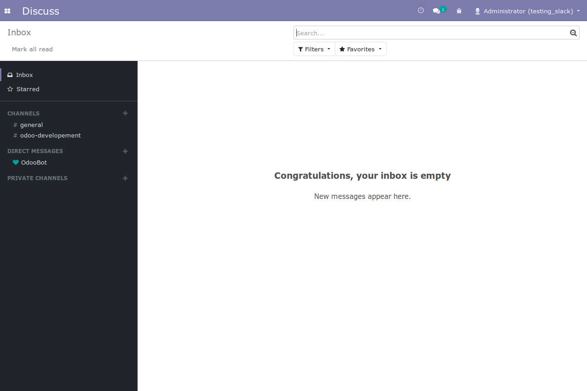
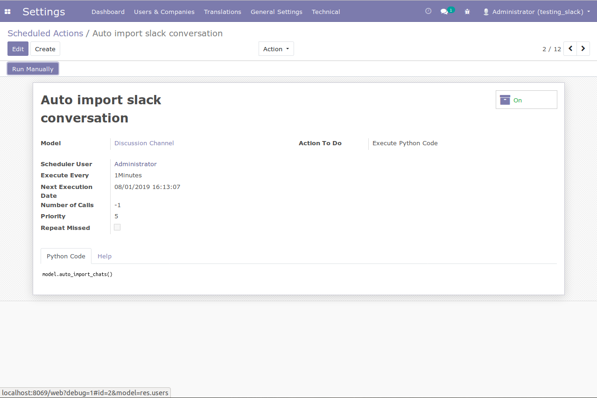

Odoo is a fully integrated suite of business modules that encompass the traditional ERP functionality.
Odoo Slack allows you to send updates on your Slack.
Key Features And Functions
One click API
integration
Send and receive
channel messages.
Send and receive
private messages.
Invite any user to slack.
Installation
Place the module in
ODOO Addons directory.
Restart ODOO server
and activate developer mode
Go to Apps-> Update
Apps List and click on update
Go to Apps, search
for module and install
Requirements
Slackclient == 2.0.0
Websocket-client
Passlib
Slack Token
After making
account on slack copy slack token from https://api.slack.com/custom-integrations/legacy-tokens

Create Slack Credentials:
Go to setting
-> user and companies -> select company.
Open company and enter Slack Credentials in Slack Integration tab.
Enter you slack token and click on Token Verification button.
Now you can see all the users in All Users list view and all channels in Channels list view.

Odoo Discuss view after syncing Slack token.

*Activating Scheduler
Activate the debug mode.
Goto Settings-> Technical.
Go to Technical-> Automation.
Select Scheduled Actions.
Activate Auto import Slack Conversation.
*Point to Ponder: Activate Scheduler as Login User

License Terms
Package is non distributable and can only be used by the organization which is buying the package